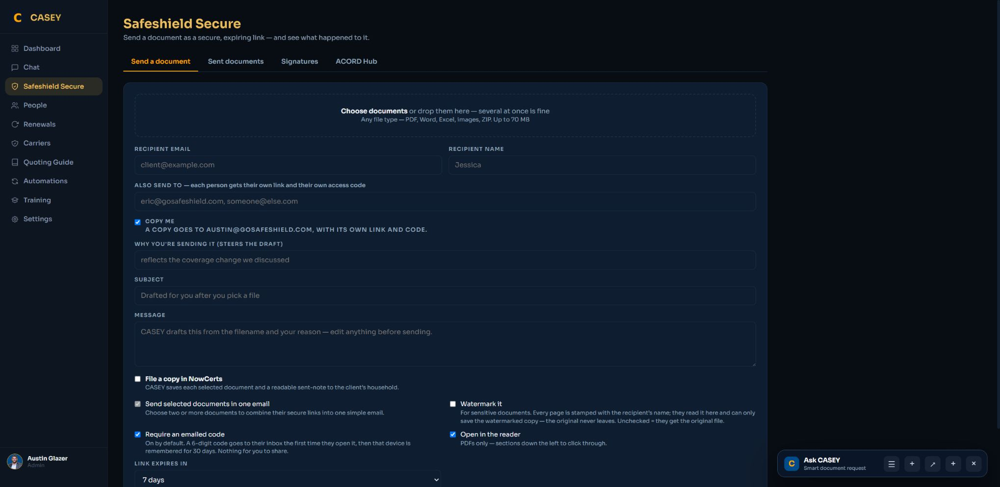

If you read nothing else
These change the job.
Smart ACORD library
Mastered editions reuse exact field and signing coordinates—and improve safely from corrections.
Official NYS ID cards
Create the real FS-20 yourself—with the state barcode—without leaving CASEY.
Template-free e-sign
Upload a PDF. CASEY finds the signature spots, then you review and send.
Finished means filed
Signed PDF, audit certificate, Google Chat notification, and NowCerts record.
Two front doors · one workflow
Start wherever you already are.
You do not have to learn a special command. Ask CASEY in Chat, or open Safeshield Secure and use Create with CASEY.
Use normal insurance language.
CASEY understands the job—not only the form number. A declarations page or typed facts become one shared intake that can produce one document or a whole bundle.
- “I need a property form for this lender.”
- “Build the cancellation and send it to the insured.”
- “Create the NY auto ACORD and ID card.”
- “Use this finished PDF and put the signature on the insured line.”
Create a smart document
Smart Match + live editing
The form fills while you watch.
CASEY reads the source, chooses the form, maps familiar facts to mastered coordinates, and shows the result beside the field list.
Click the PDF to fix a value.
Every CASEY-filled value is a live text box. Click the value on the document, type the correction, and the PDF updates without starting over.
- Exact field placement is cached by form and edition.
- Smart Match shows where every value came from.
- Required gaps are highlighted; optional fields can stay off.
- Check or uncheck fields, signatures, initials, text, and checkboxes.
- Multiple documents share one fact set—so you review once.
What “learning placement” means: once a form edition is mastered, CASEY reuses its verified coordinate map. Agent corrections become structured feedback for the Overseer layer; they never silently rewrite an approved form.
NEW YORK PERSONAL AUTO APPLICATION
The smart ACORD library
CASEY knows the form—and remembers the placement.
CASEY's current catalog models 53 ACORD workflows. Eleven high-use forms are already mastered for generation, exact field coordinates, signing roles, live editing, and document checks; the rest are organized into the mastering queue instead of living as mystery PDFs.
Mastered now ReadyGeneration, placement, review, and signing behavior are mapped
Commercial application libraryModeled and prioritized for edition-by-edition mastering
Personal lines, service, and claimsCommon applications, changes, certificates, and loss notices
Specialty, schedules, and administrationIndexed workflows ready to be mastered as business use demands
On a phone, tap any library group to expand its complete form list.
The showstopper
You can create official NYS ID cards.
Not a screenshot. Not a generic PDF. Safeshield Secure sends verified policy data through our licensed New York generator and returns the official FS-20 with the state barcode.
Ask for the card—or let CASEY infer it.
Upload a New York auto declarations page or type the facts. CASEY identifies the risk state, carrier, driver, vehicle, policy term, and the carrier's NYS code. If something required is missing or invalid, she asks instead of guessing.
- Pull from the declaration page, typed request, or NowCerts fallback.
- Review driver, policy, carrier, vehicle, VIN, and effective dates.
- Generate the official card in the background—your computer stays free.
- View it fitted to the screen, download it, or send it securely.
- Build the ACORD 90 and ID card together from the same intake.
Name & Address of Issuer
Safeshield Insurance Agency LLC
191 King Street
Chappaqua, NY 10514
SAMPLE-6859403
Effective Date Expiration Date
07/30/2026 07/30/2027
123 SAMPLE STREET
ALBANY NY 12207
2025 SAMPLE
Vehicle Identification Number
TESTVIN00000000001
FS-20
Safeshield Secure Sign
E-sign without building a template first.
Upload a finished PDF or generate one with CASEY. Known forms already know their signature roles; unfamiliar PDFs are inspected for printed signing lines and boxes, then shown in the visual editor.
The signer gets a clean, mobile-first experience.
- Fitted PDF preview—no giant zoom or sideways document.
- Type a signature or draw it with a finger, mouse, or stylus.
- Clear electronic-signature consent before the Sign button.
- Signature, initials, text, radio buttons, and checkboxes.
- Sequential or parallel signing when more than one person is needed.
- Safeshield Insurance is the sender—not an individual agent.
The visual field editor lets you move, add, or remove a signing box before sending. A cancellation can require only the named-insured signature while producer/witness signatures and dates are applied by the agent workflow.
CANCELLATION REQUEST / POLICY RELEASE
Review and sign
Signer: Jerry Garcia · named insured
Per-send controls
Secure when it needs to be. Human when it should be.
The agent decides the security and customer-experience settings for each send. Advanced options stay tucked away until you need them.
Thank you—your signature is complete
Your document has been securely signed, and its audit certificate is attached to the completed PDF.
Would you share your experience?
If Safeshield made this easy, we'd be grateful for a 5-star review. It only takes a moment.
Leave a 5-star reviewOn a phone, the same options stack into large tap targets and the signing panel moves below the fitted document.
The secure sender
Send one file—or a whole package.
Drag in PDFs, Word files, spreadsheets, images, or ZIPs. Multiple recipients receive their own private link and access code, and multiple selected documents can travel in one clean email.

Nothing disappears after “send”
A signed document becomes a complete record.
Safeshield Secure tracks delivery and signing, keeps the evidence package, and routes the finished work to the systems the team already uses.
Search it like a question.
Ask CASEY, “Did Jerry Garcia sign the cancellation?” The signature search returns signer, status, completion time, delivery state, password protection, NowCerts archive status, and the finished files.
- Reminder, resend, fresh private link, and signer-email correction.
- Add, reset, or remove password protection.
- Operations health checks delivery, expiration, NowCerts, Google Chat, file integrity, and retention.
- Unmatched NowCerts records are saved safely and escalated for resolution—not lost.
Completed signatures
Permanent copies and tamper-evident audit records| Document | Completed | Status | Actions |
|---|---|---|---|
| Jerry Garcia cancellation CASEY e-sign | Today · 10:42 AM | ✓ Verified | View signed PDF |
| Jerry Garcia ACORD package CASEY e-sign | Today · 10:35 AM | ✓ Verified | Details & downloads |
The intelligence layer
Fast today. Smarter every time.
Overseer is live. It checks generated documents without slowing the main workflow, learns safely from repeated corrections, and gives administrators control over which lessons should influence future reviews.
CASEY Overseer · transparent learning
Fact-check in the background—never in the way.
Overseer compares extracted facts, mapped fields, signing roles, and rendered placements in parallel with the fast document path. Agents still get the preview immediately. Property documents are checked for coverage amounts, deductibles, premium, lender details, loan number, and authorized representative; cancellation and New York auto forms receive their own workflow-specific checks.
Try this this week
Three prompts are enough to start.
Use the words you would use with another agent. CASEY handles the form names and workflow underneath.
Property evidence
- Attach the declaration page.
- Review CASEY's form choice and Smart Match values.
- Click any PDF value to correct it.
- Download, file, or send.
New York auto bundle
- Keep both document checkboxes selected.
- Review the shared driver, vehicle, policy, and carrier facts.
- Create selected documents.
- Preview each tab and send together if needed.
Cancellation + e-sign
- Confirm cancellation date and reason.
- Check that only the required insured signature is requested.
- Choose password/review options if appropriate.
- Send and follow the result in Signatures.
Your own finished PDF
- Choose Upload a finished PDF.
- Review detected signing fields.
- Drag, resize, add, or remove any field.
- Approve and send.
Safeshield Secure
It is live. Go make something.
Start in CASEY Chat or open Safeshield Secure. If CASEY asks a question, answer it in the document conversation—the same draft updates in place.
Open Safeshield Secure ↗